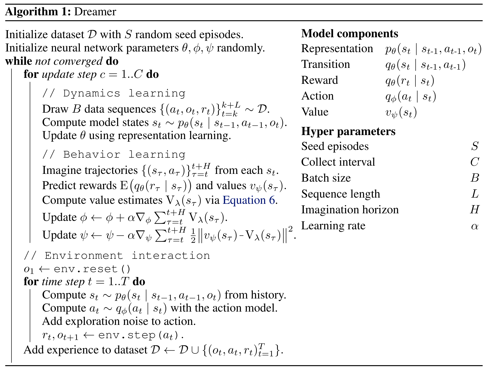
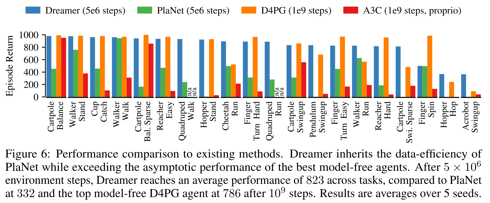
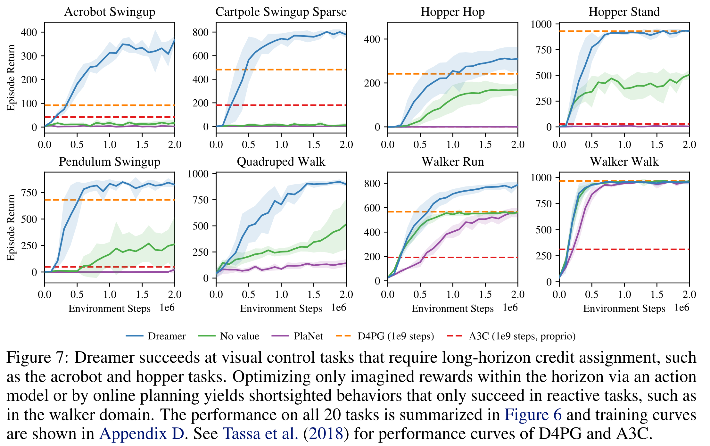

Dreamer
Contents
Dreamer#
제목: Dream to Control: Learning Behaviors by Latent Imagination
저자: Hafner, Danijar, Timothy Lillicrap, Jimmy Ba, and Mohammad Norouzi, Google research, University of Toronto, DeepMind
연도: 2020년
학술대회: ICLR
키워드: Model-based RL
Overview#
풀고자 하는 task는 이미지 입력으로부터 로봇을 제어하는 DeepMind Control Suite이다.
Dreamer에는 크게 3가지 파트가 있다.
환경과 상호작용하여 데이터셋 만들기
데이터셋으로부터 latent dynamics model 학습
굳이 latent dynamics model인 이유는 실제 환경이 POMDP로 모델링되어 있어서 true state \(s_t\) 대신 image observation \(o_t\)을 관측하기 때문. 이미지 observation space를 갖는 dynamics model을 학습할 경우 계산 복잡도가 높아진다. 따라서 true state들이 살고 있는 저차원 latent space에서 작동하는 latent dynamics model을 학습. 실험에서는 30차원으로 latent space를 모델
학습된 latent dynamics model로부터 trajectory를 만들며 좋은 행동을 학습
따라서 학습해야 할 것이 크게 2가지가 있다.
실제 경험 데이터로부터 latent dynamics model \(p_{\theta}\) 학습. 이 과정을 representation learning이라고 부른다. 다음 두 가지 목적 함수에 대해서 실험을 진행
목적 함수1: Reward 예측 + observation reconstruction + KL regularizer
목적 함수2: Reward 예측 + conservative + KL regularizer
목적 함수1을 사용했을 때 더 좋은 성능을 보임
Latent dynamics model로부터 좋은 정책 \(q_{\phi}(a_\tau | s_\tau)\) 학습. 이 과정을 behavior learning이라고 부른다.
정책 \(q_{\phi}\)의 상태 가치 함수를 추정하는 가치 네트워크 \(v_{\psi}(s_\tau)\)를 사용하여 actor-critic 방법론 사용
Policy evaluation: \(\text{TD}(\lambda)\) 타겟을 사용하여 가치 네트워크 \(v_{\psi}(s_\tau)\) 학습. \(\text{TD}(\lambda)\)를 만들 때 사용되는 보상은 실제 보상이 아니라 latent dynamics model로부터 예측된 보상
Policy improvement: \(v_{\psi}(s_\tau)\)을 최대화
Dreamer의 알고리즘은 다음과 같다. 
Representation learning#
Latent dynamics model에는 크게 3가지가 있다.
Representation model \(p_{\theta}(s_t | s_{t-1}, a_{t-1}, o_t)\): 실제 환경의 \(64 \times 64 \times 3\) 이미지 observation \(o_t\)를 30차원의 latent state \(s_t\)로 임베딩, CNN encoder로 생각하면 된다.
Transition model \(q_{\theta}(s_{t+1} | s_t, a_t)\): latent space에서의 transition을 모델링. latent state와 action을 입력 받아서 latent state space 크기 (30차원)의 평균과 분산 출력하여 diagonal Gaussian 분포를 만듦. MLP임
Reward model \(q_{\theta}(r_t | s_t)\): latent state에서 받을 보상 예측. latent state와 action을 입력 받아서 1차원 평균과 분산 출력하여 Gaussian 분포를 만듦. MLP임
파라미터 \(\theta\)는 variational lower bound (ELBO)를 최대화하는 방향으로 학습됌. 논문에서는 2가지 목적 함수를 제시하지만, 둘 중 성능이 더 좋았던 image reconstruction 목적 함수만 보면 다음과 같다. image reconstruction \(q_{\theta}(o_t | s_t)\)는 Transposed CNN으로 생성되며 추측컨데 VAE와 같은 원리로 학습되지 않을까.
Behaviour learning#
실제 환경에서 actor-critic 사용하듯이 latent dynamics model로부터 데이터 만들어 actor-critic을 한다. 상태 가치 네트워크 \(v_{\psi}\)는 \(\text{TD}(\lambda)\) 타겟을 사용하여 학습된다.
정책 네트워크 \(q_{\phi}\)는 \(\text{TD}(\lambda)\) 타겟을 최대화하는 방향으로 학습된다. 이때, online learning과 다른 부분이 있다. 실제 환경과 상호작용을 하며 만든 데이터의 경우 \(s_{\tau}, r_{\tau}\)가 transition probability density 및 reward function으로부터 샘플링되기 때문에 직접적으로 \(\text{TD}(\lambda)\) 타겟을 최대화시킬 수 없다. \(\text{TD}(\lambda)\) 안에 파라미터 \(\phi\)가 없기 때문이다. 하지만 latent model dynamics를 사용할 경우 trajectory를 만드는 동안 취했던 행동들 덕분에 \(\text{TD}(\lambda)\) 타겟 안에 파라미터 \(\phi\)가 존재한다. 따라서 reparameterization trick과 함께 \(v_{\psi}(s_t)\)을 최대화 할 수 있다.
Results#
20개 task 결과 요약 
저자의 이전 논문 PlaNet보다는 consistently 좋다.
D4PG 및 A3C가 환경과 \(5 \times 10^6\)번 상호작용한 Dreamer을 성능과 비슷해지기까지 더 많은 상호작용 \(10^9\) 번이 필요하다.
Dreamer는 \(10^6\)번 상호작용까지 5시간 소요. PlaNet은 11시간 소요. D4PG는 \(10^9\)번 동안 24시간이 소요된다.
학습 곡선 